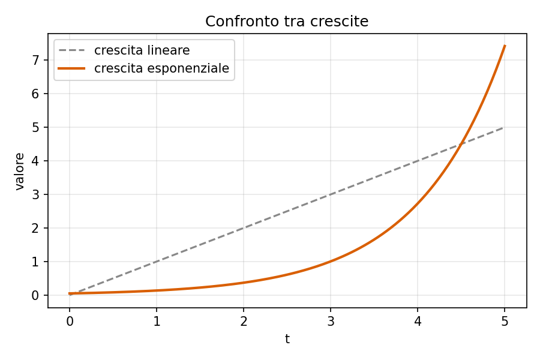

Capitolo 2 — Crescita e algoritmi
1 Crescita esponenziale
Una quantità che cresce esponenzialmente nel tempo segue la legge:
\[ N(t) = N_0 \, e^{rt} \tag{1}\]
dove \(N_0\) è il valore iniziale e \(r\) il tasso di crescita. L’Equazione 1 è illustrata in Figura 1, a confronto con una crescita lineare.

2 Massimo comun divisore
L’Algoritmo 1 mostra l’algoritmo di Euclide per il calcolo del massimo comun divisore fra due interi.
L’Algoritmo 1 termina sempre, poiché ad ogni iterazione il resto diminuisce strettamente.
3 Confronto tra ordini di crescita
La Tabella 1 riassume alcuni ordini di crescita comuni in informatica.
| Notazione | Nome | Esempio tipico |
|---|---|---|
| \(O(\log n)\) | Logaritmica | Ricerca binaria |
| \(O(n)\) | Lineare | Scansione di un array |
| \(O(n \log n)\) | Quasi lineare | Merge sort |
| \(O(2^n)\) | Esponenziale | Forza bruta su sottoinsiemi |
Come mostra la Tabella 1, l’algoritmo di ricerca binaria del capitolo precedente appartiene alla classe più efficiente tra quelle elencate.
La distribuzione normale standard ha sempre media \(0\) e varianza \(1\).
Per generalizzare a media e varianza qualsiasi, basta applicare la trasformazione \(X = \mu + \sigma Z\), dove \(Z\) è normale standard.